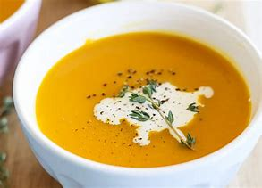
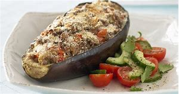

|  |
- pumpkin 200g
- white onions 30g
- celeriac 30g
- carrots 30g
- ginger 10g
- coconut milk 200g
- vegetable stock 200g
- honey or maple sirup
- salt, cayenne pepper
- olive oli 5g
|
- cut all vegetables in dices about 1cm
- heat olive oil in a pot
- sauté the vegetables until softened but no colour
- add honey/maple sirup and let caramelize
- deglaze with the stock
- add coconut milk, reduce heat
- let gently boil for about 25 min.
- add salt/pepper to taste
- blend and serve
- optional pumpkin seeds, sprouts, cream
|
| stuffed eggpland |
ingredients |
cook it |
 |
- 2 eggplants cut in halves
- white onions diced 20g
- cherrie tomates cut in cuarters 50g
- grated parmiggiano cheese 10g
- 2 garlic cloves chopped
- 1 tbsp. rosemary, thyme, parsley each, chopped
- tomato paste 20g
- vegetable stock 50g
- olive oil 5g
- salt, pepper
|
- take out eggplant pulp and cut into 1cm dices
- heat olive oil in a flat pan
- add all vegetables and cook until softened
- add tomato paste, stock and reduce until almost dry
- add chopped herbs and adjust seasoning to taste
- put the cooked vegetable mix in the eggplant
- top with the grated cheese
- bake in preheated oven at 150 C for 25 Minutes.
|